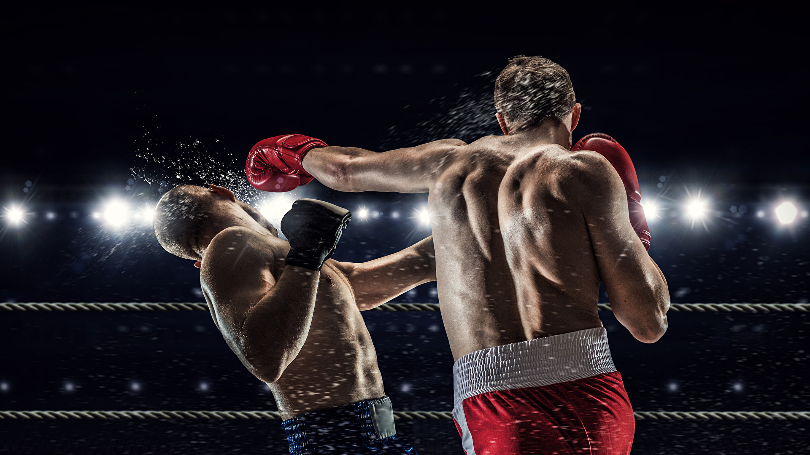
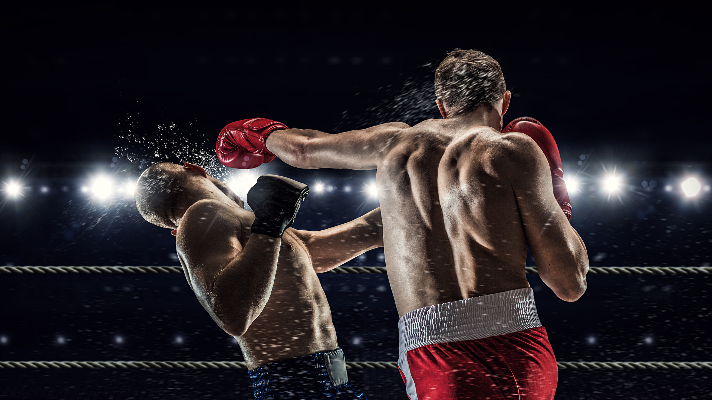
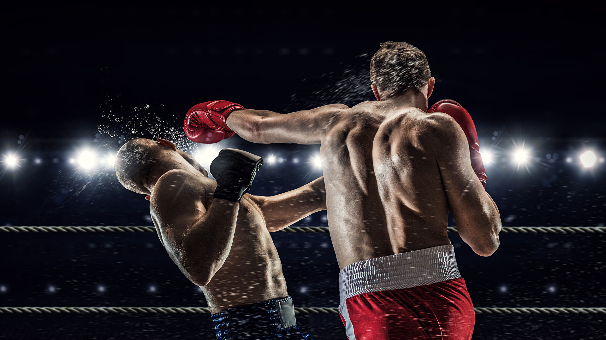

⬆

Бокс (фр. boxe — «бокс» та boxeur — «боксер» від англ. boxing — «удари», «биття», «бокс», to box — «битися на рингу», «боксувати») — контактний вид спорту, єдиноборство, в якому спортсмени наносять один одному удари кулаками в спеціальних рукавичках. Рефері контролює бій, який триває до 12 раундів. Перемога боксера у випадку, якщо суперник збитий з ніг і не може піднятися протягом десяти секунд (нокаут) або якщо він отримав травму, яка не дозволяє продовжувати бій (технічний нокаут). Якщо після встановленої кількості раундів поєдинок не був припинений, то переможець визначається оцінками суддів.
Найбільш ранні свідоцтва подібних змагань відображені ще на шумерських, єгипетських і мінойських рельєфах. Турніри з кулачних боїв, що нагадує бокс, проходили ще в Стародавній Греції. По-справжньому бокс став спортивним єдиноборством в 688 році до н. е., коли кулачні бої були вперше включені в програму античних Олімпійських ігор. Сучасний бокс зародився в Англії на початку XVIII століття.
У деяких країнах існують власні різновиди боксу (французький бокс (симбіоз савата, англійського боксу і фехтування на тростинах) у Франції, летхвей в М'янмі, муай-тай в Таїланді), тому часто використовується термін «англійський бокс».
Бокс є олімпійським видом спорту.
Перше зображення бою було зроблено в шумерській печері в третьому тисячолітті до н. е., а давньоєгипетський рельєф другого тисячоліття до н. е. зобразив уже не тільки боксерів, а й глядачів. Але обидва бійця б'ються голіруч. У 1927 році американський археолог Спенсер виявив у Багдаді кам'яні плити з малюнком, на якому дві людини готуються до поєдинку. Прийнято вважати, що вік цієї знахідки — 7000 років.
Кулачні бої також описувалися в давніх індійських текстах: у Ведах, Рамаяні, Махабхараті. Свідоцтва існування боксу були знайдені і під час розкопок у містах Мохенджо-Даро і Хараппа.
Бобслей набув поширення в ряді країн Європи, де стали проводитися змагання, а потім і національні чемпіонати з цього виду спорту. В Австрії вони проводяться з 1908 року, а в Німеччині — з 1910 року.
Перші знахідки, що підтверджують боксування в рукавичках, датовані 1500—900 роками до нашої ери, на Криті й у горах Сардинії (2000—1000 до н. е.).
Ім'я:
Дата:
Національність:
Бойова стійка:
Вагова категорія:
Вага тіла:
Зріст:
Розмах рук:
Статистика:
Рейтинг:
Ім'я:
Дата:
Національність:
Бойова стійка:
Вагова категорія:
Вага тіла:
Зріст:
Розмах рук:
Статистика:
Рейтинг: